The section library
All 46 sections, grouped exactly like the picker popup.
Every section you can add to a page, with its screenshot and fields. This list is generated from the website code itself, so it is always complete. Remember: any field left empty shows the original design content.
Jump to: Paginakoppen · Veelgestelde vragen · Collectie · Actieblokken · Merken · Werkwijze · Cijfers · Prijzen · Extra's · Tekstblokken · Cases · Foto's · Reviews · Duurzaamheid · Partners · Waarom Sokkies · Over ons · Funnel
Paginakoppen
Paginakop (kruimelpad + titel)
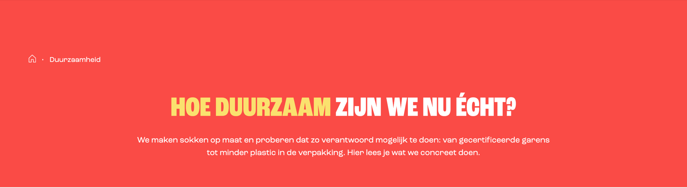
| Field | Notes |
|---|---|
| Kruimelpad tonen | Uit op de homepage. |
| Kruimelpad-label | Leeg = paginatitel. |
| Titel | Het gele deel zet je tussen [ ] óf in <span>…</span>: bijv. "[Hoe duurzaam] zijn we nu écht?". Regelafbraak mag met <br>. Leeg = paginatitel. |
| Subtekst | Optioneel. Een nieuwe regel in dit veld wordt een regelafbraak op de site. |
| Tekst | — |
| Review-score tonen | Score en aantal komen uit Website-instellingen. |
| Knop 1 (geel) | Optioneel. |
| Knop 2 (wit) | Optioneel. |
| Onderregel (tekst) | Optioneel, bijv. "Eigen ontwerp?". |
| Onderregel (link) | Bijv. "Klik hier voor de templates". |
| Fotoslider onder de titel | Optioneel — de schuine fotoslider zoals op de homepage. Foto's hier plaatsen zet hem aan. |
Paginakop met fotokolommen
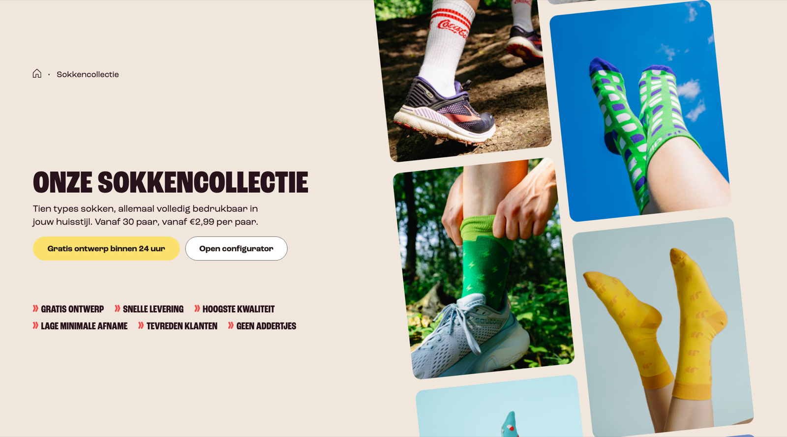
| Field | Notes |
|---|---|
| Kruimelpad-label | Leeg = paginatitel. |
| Titel | Geel deel tussen [ ] óf in <span>…</span>; regelafbraak met <br>. Leeg = paginatitel. |
| Subtekst | Optioneel. Een nieuwe regel wordt een regelafbraak. |
| Knop 1 (geel) | Optioneel. Origineel op Collectie: "Gratis ontwerp binnen 24 uur" naar de offertepagina. |
| Knop 2 (transparant) | Optioneel. Origineel op Collectie: "Open configurator". |
| Tekst | — |
| Fotokolom links | Verticale fotoslider links. Leeg = standaardset. 4 foto's is het ritme van het origineel. |
| Fotokolom rechts | Verticale fotoslider rechts (loopt tegengesteld). Leeg = standaardset. |
Veelgestelde vragen
Veelgestelde vragen (accordeon)
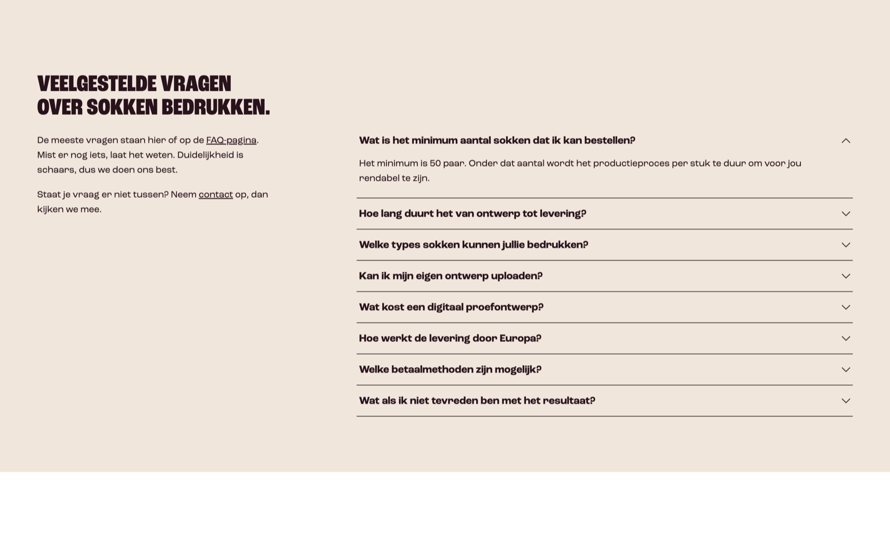
| Field | Notes |
|---|---|
| Titel | Geel deel tussen [ ] óf in <span>…</span>; regelafbraak met <br>. Leeg = standaardtitel. |
| Introtekst (linkerkolom) | De tekst links naast de vragen; links naar andere pagina's mogen. |
| Welke vragen tonen? | — |
| Eerste vraag standaard open | — |
| Link "Bekijk alle vragen" tonen | — |
Veelgestelde vragen (geel, gecentreerd)
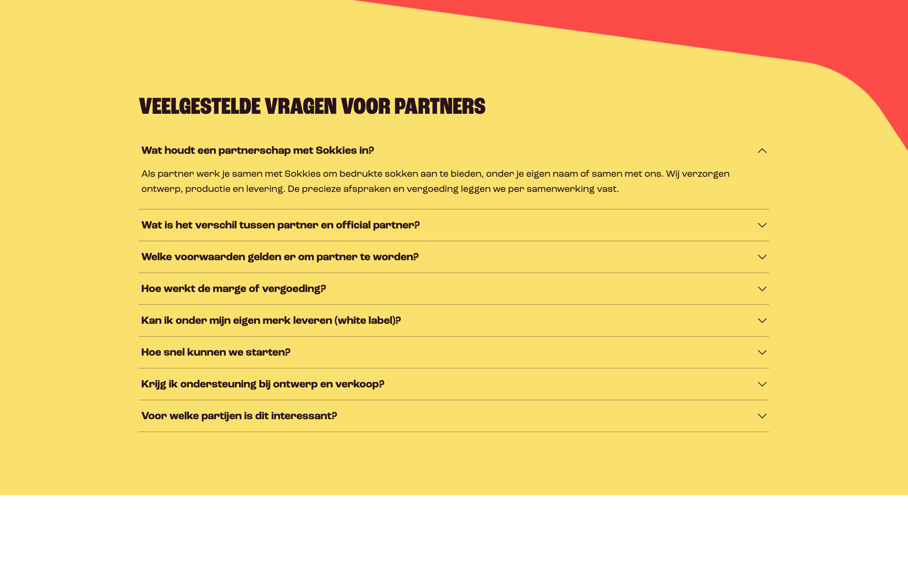
| Field | Notes |
|---|---|
| Titel | Leeg = "Veelgestelde vragen". |
| Welke vragen tonen? | — |
FAQ-pagina (zoeken + categorie\u00ebn)
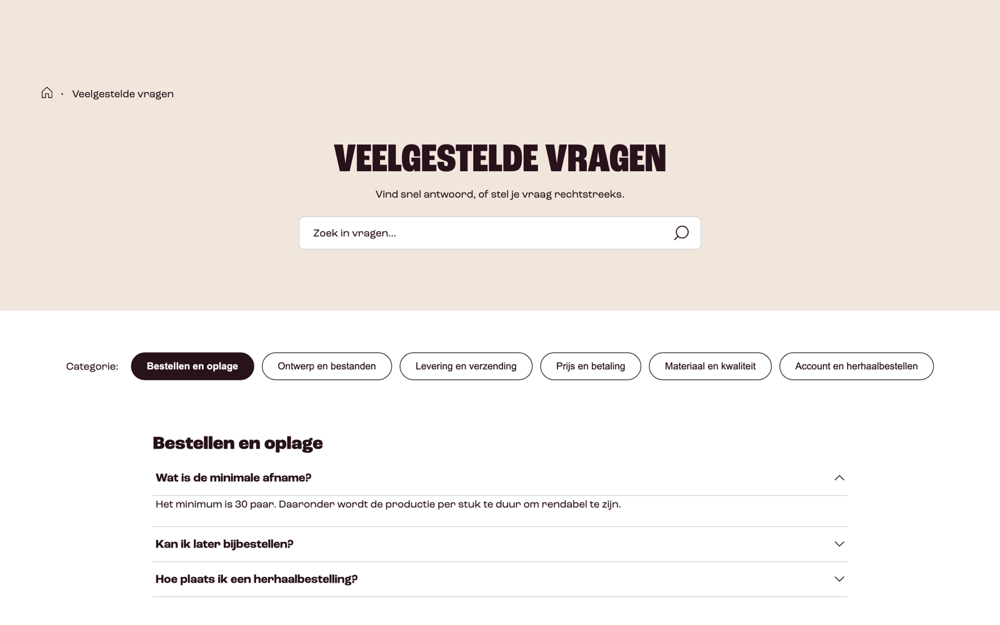
| Field | Notes |
|---|---|
| Titel | Leeg = "Veelgestelde vragen". Alle categorieën en vragen komen automatisch uit "Veelgestelde vragen" in het menu links. |
| Subtekst | Leeg = "Vind snel antwoord, of stel je vraag rechtstreeks.". |
| Zoekveld-tekst | Leeg = "Zoek in vragen...". |
Collectie
Sokkencollectie (kaartenrij)
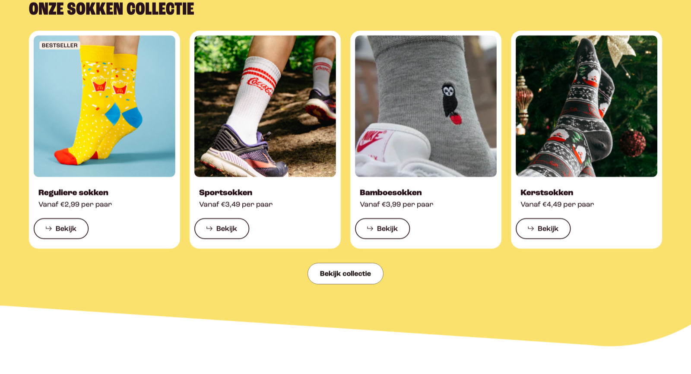
| Field | Notes |
|---|---|
| Titel | Geel deel tussen [ ] óf in <span>…</span>. Leeg = "Onze sokken collectie". |
| Soktypes (maximaal 4) | De kaartenrij is ontworpen voor precies 4 kaarten — kies er maximaal 4 en sleep ze in volgorde. Leeg = de 4 nieuwste. Alle 10 typen tonen? Gebruik de layout "Alle soktypes (grid met beschrijving)". |
| Knop onder de kaarten tonen | — |
Alle soktypes (grid met beschrijving)
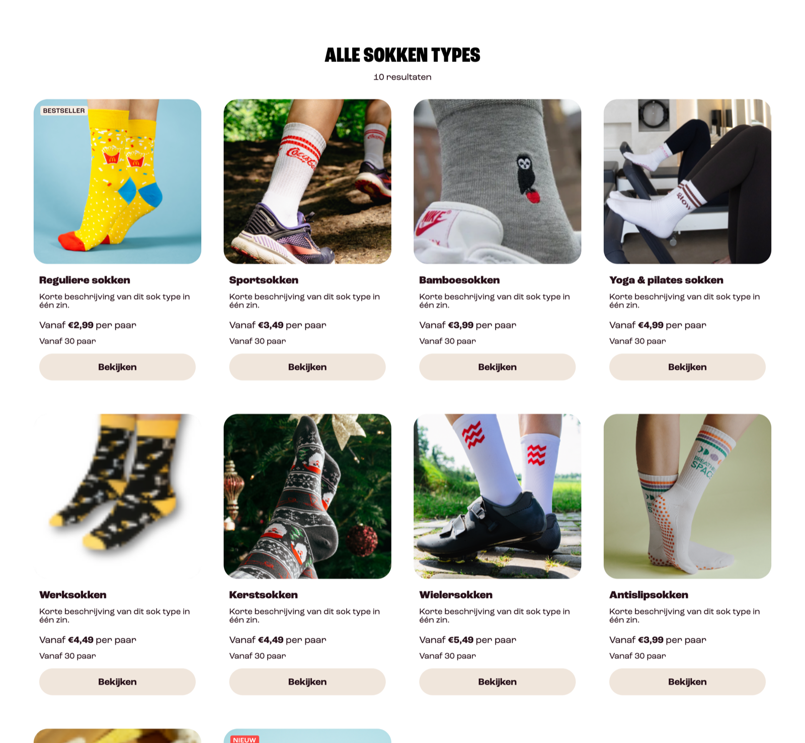
| Field | Notes |
|---|---|
| Titel | Leeg = "Alle sokken types". De teller ("10 resultaten") telt vanzelf mee. |
| Soktypes | Leeg = álle soktypes. |
Soktypes-slider (Bekijk ook deze)
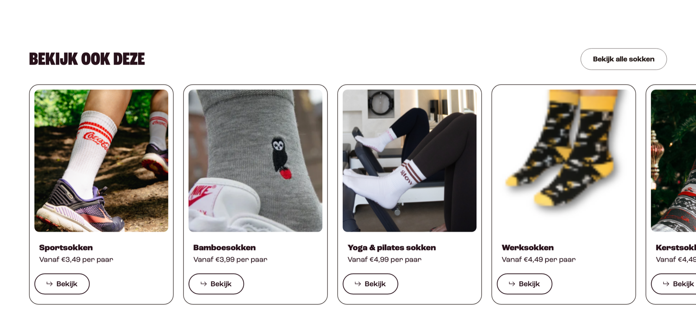
| Field | Notes |
|---|---|
| Titel | Leeg = "Bekijk ook deze". |
| Soktypes | Leeg = de 8 nieuwste. Tip: kies hier de ándere types dan die op de pagina zelf staan. |
| Knop rechtsboven | Leeg = "Bekijk alle sokken" naar de collectiepagina. |
Vergelijkingstabel soktypes
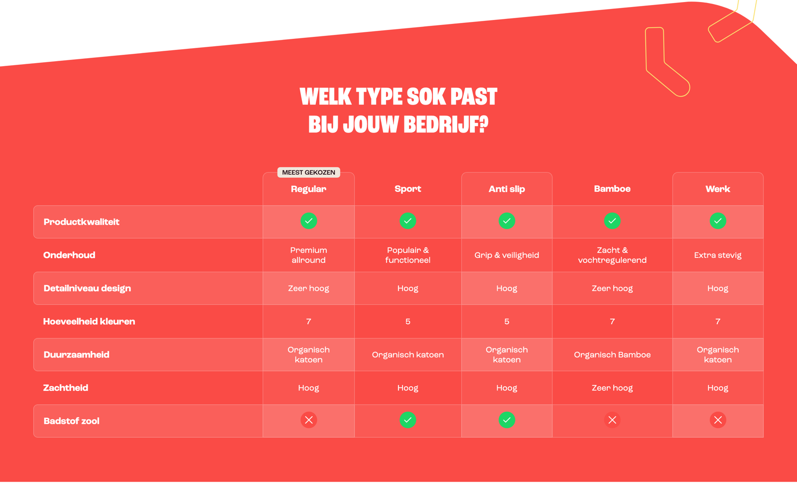
| Field | Notes |
|---|---|
| Titel | Leeg = "Welk type sok past bij jouw bedrijf?". |
| Naam | — |
| Badge (optioneel) | — |
| Label | — |
| Tekst (leeg = vinkje) | — |
Actieblokken
Actieblok met formulier (Mis niets)
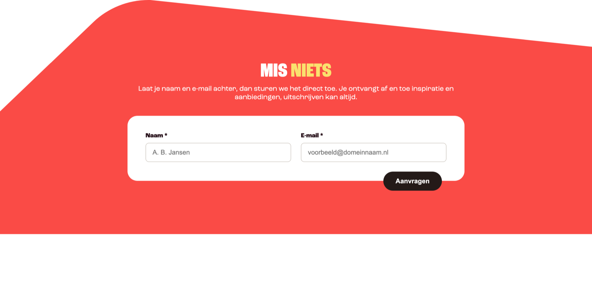
| Field | Notes |
|---|---|
| Titel | Leeg = "Mis [niets]". Geel deel tussen [ ]. |
| Subtekst | Leeg = standaardtekst. Het formulier is nog een demo — echte verzending komt met de formulierenfase. |
Contactformulier met contactkaart
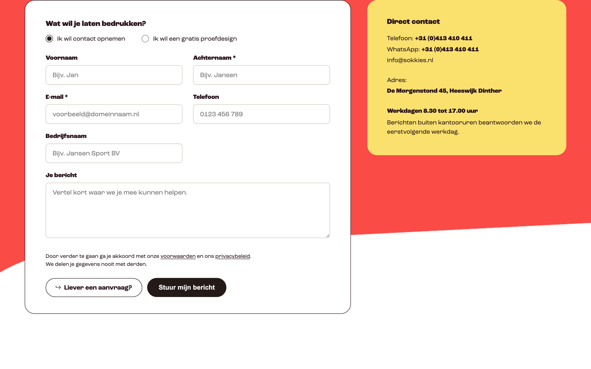
No fields — this section is fully automatic.
Afsluitend actieblok (rood paneel)
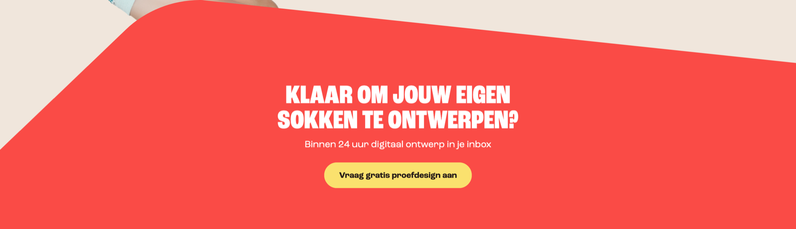
| Field | Notes |
|---|---|
| Titel | Regelafbraak mag met <br>; een geel deel zet je tussen [ ] óf in <span>…</span>. Leeg = standaardtekst. |
| Subtekst | — |
| Knop | Leeg = standaardknop naar de offertepagina. |
| Sokken-voetjes tonen | — |
| Knop 2 (wit, optioneel) | Gevuld = twee knoppen naast elkaar (zoals op Over ons en Duurzaamheid). |
| Contactregel onder de knop | "Of bel … • WhatsApp …" — nummers komen uit Website-instellingen. |
| Promokaart op deze pagina | — |
Merken
Merkenstrip (logo-loop)
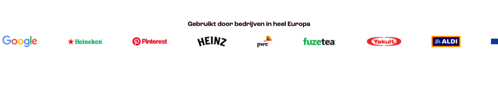
| Field | Notes |
|---|---|
| Titel | Leeg = "Gebruikt door bedrijven in heel Europa". |
| Logo's | Leeg = álle logo's. De strip loopt vanzelf oneindig door. Logo's beheer je onder "Merklogo's" in het menu links. |
Werkwijze
Stappenblok (4 stappen met iconen)
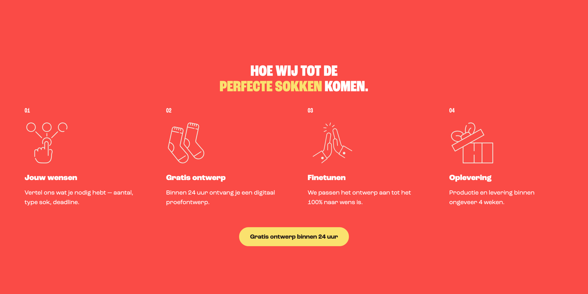
| Field | Notes |
|---|---|
| Titel | Leeg = de standaardtitel. Geel deel tussen [ ], regelafbraak met <br>. |
| Icoon | Vierkant icoon (SVG of PNG). |
| Tekst | — |
| Knop | Leeg = "Gratis ontwerp binnen 24 uur" naar de offertepagina. |
Stappen met fotocollage
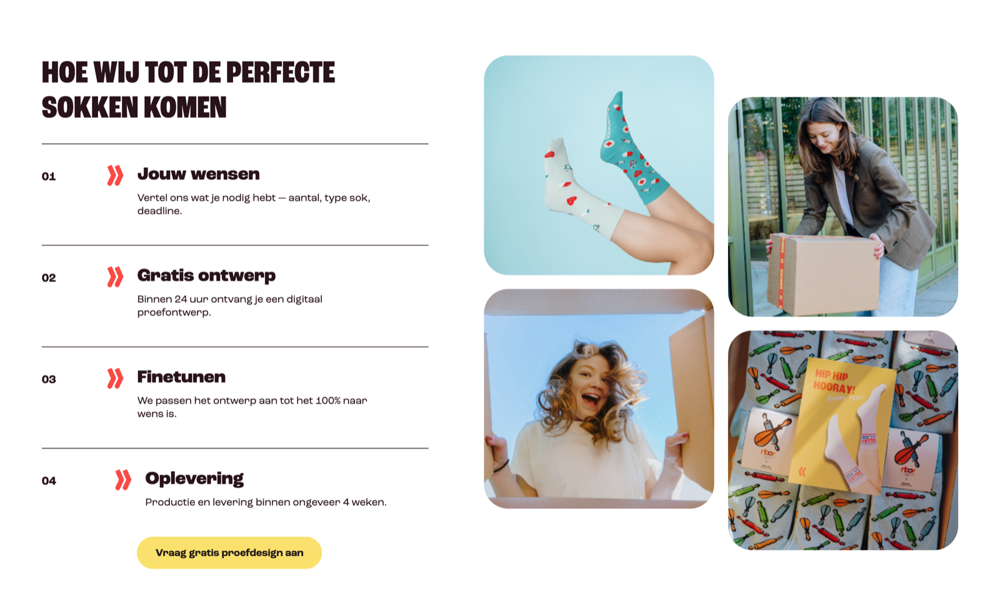
| Field | Notes |
|---|---|
| Titel | Leeg = de standaardtitel van de gekozen variant. |
| Tekst | — |
| Fotocollage rechts | 4 foto's is het ritme van het origineel. Leeg = de standaardset van de gekozen variant. |
Stappenkaarten (slider met foto's)
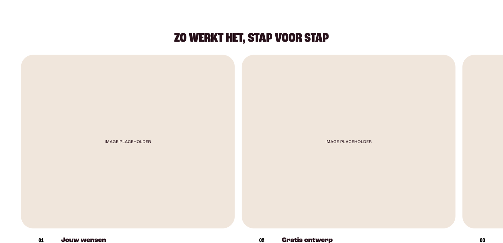
| Field | Notes |
|---|---|
| Titel | Leeg = "Zo werkt het, stap voor stap". |
| Foto | — |
| Tekst | — |
Cijfers
Cijferblok met fotocollage (geel)
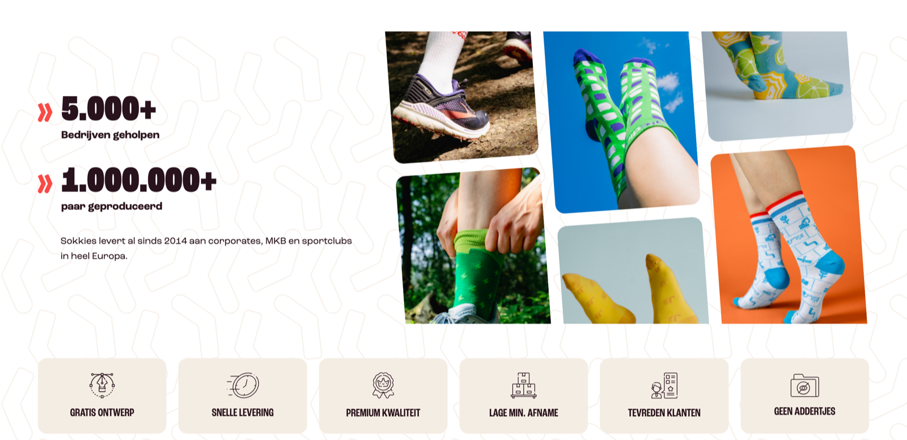
| Field | Notes |
|---|---|
| Getal | — |
| Label | — |
| Beschrijving | Leeg = standaardtekst. |
| Foto's (3 schuivende kolommen) | Leeg = standaardset. Foto's worden automatisch over de 3 kolommen verdeeld. |
| Pluspunten-rij tonen | Uit = de Over ons-weergave (alleen cijfers + foto's). |
| Icoon | — |
| Tekst | — |
Prijzen
Prijscalculator met staffeltabel
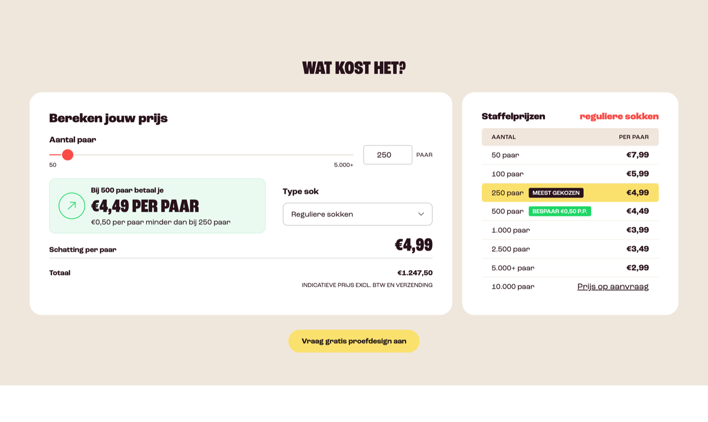
| Field | Notes |
|---|---|
| Titel | Leeg = "Wat kost het?". De prijzen zelf beheer je onder Website-instellingen → Prijzen & staffels. |
| Knop onder de calculator | Leeg = "Vraag gratis proefdesign aan" naar de offertepagina. |
Extra's
Geschenk-opties (kaartenrij)
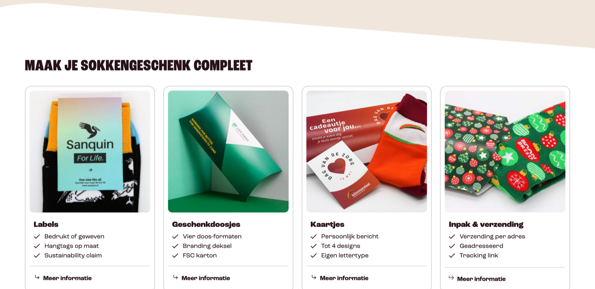
| Field | Notes |
|---|---|
| Titel | Leeg = "Maak je sokkengeschenk compleet". |
| Foto | — |
| Tekst | — |
| Link | Leeg = "Meer informatie" zonder doel (zoals htmlv). |
Configurator-voorbeeld (preview + pluspunten)
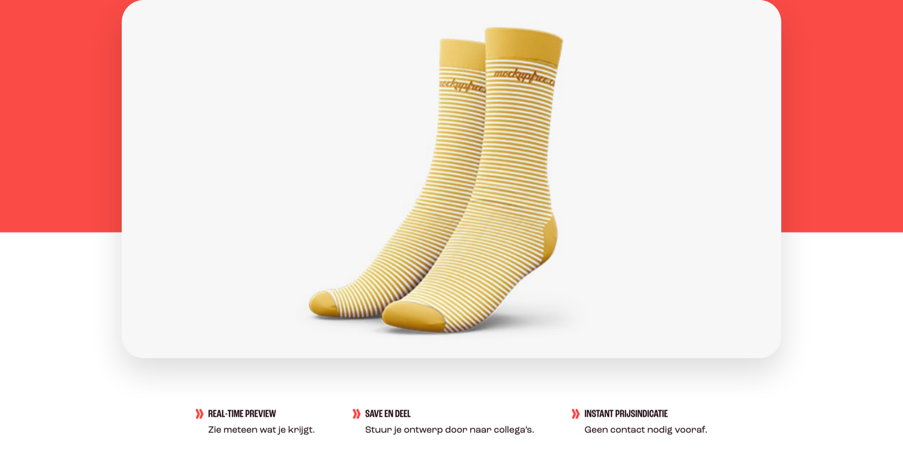
| Field | Notes |
|---|---|
| Voorbeeld-afbeelding | Leeg = de standaard demo-afbeelding. |
| Titel | — |
| Tekst | — |
Download-kaarten
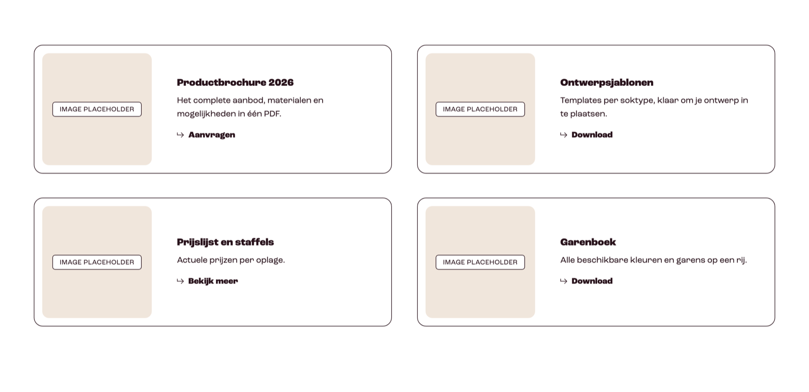
| Field | Notes |
|---|---|
| Afbeelding | Leeg = nette placeholder (zoals het ontwerp). |
| Titel | — |
| Tekst | — |
| Bestand (PDF e.d.) | — |
| Of een link | — |
Toepassingen (6 kaarten)
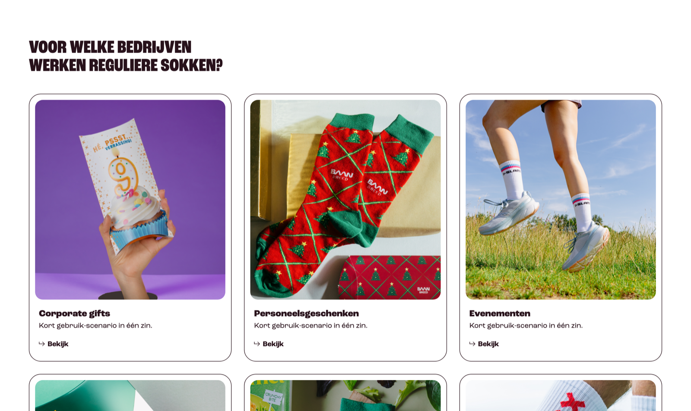
| Field | Notes |
|---|---|
| Titel | Leeg = standaardtitel. Regelafbraak met <br>. |
| Foto | — |
| Tekst | — |
Tekstblokken
Tekstblok merkverhaal
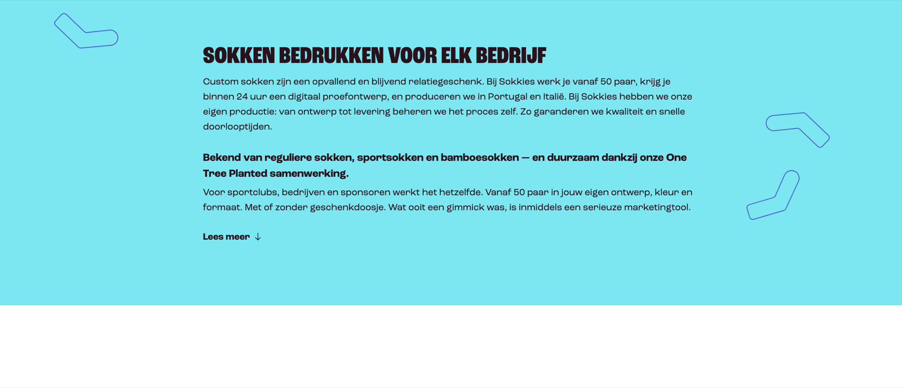
| Field | Notes |
|---|---|
| Titel | Leeg = de home-titel. |
| Tekst (boven) | — |
| Tussenkop | — |
| Tekst (onder) | — |
| Lees meer-link | Leeg = "Lees meer" naar de Over ons-pagina. |
Waarom-blok (intro + 4 punten)
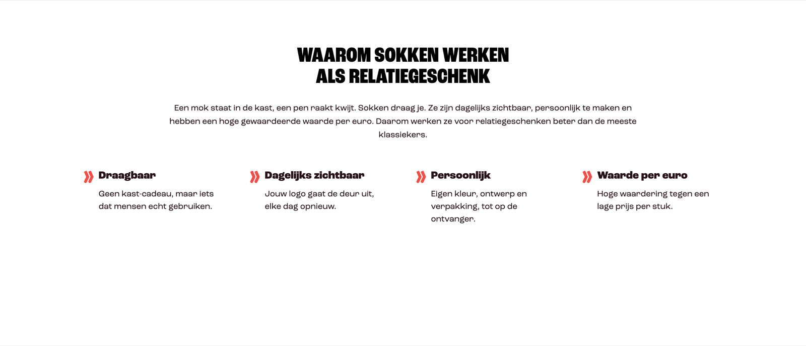
| Field | Notes |
|---|---|
| Titel | Leeg = standaardtitel. Regelafbraak met <br>. |
| Introtekst | — |
| Tekst | — |
Cases
Klantcases (slider)
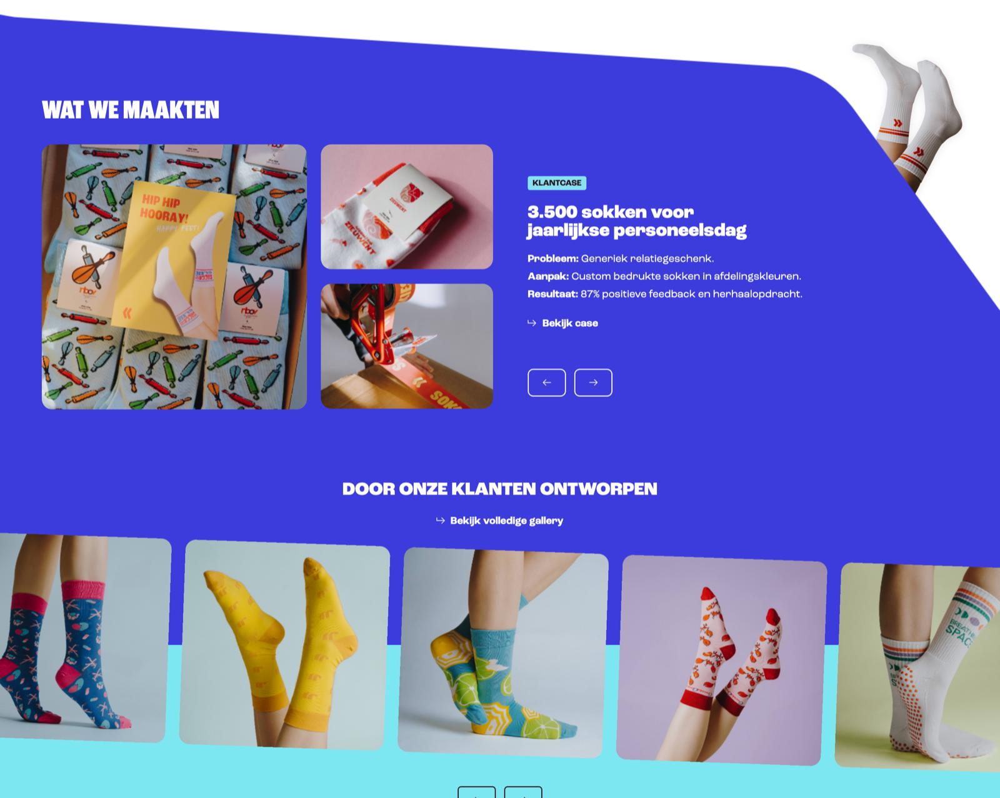
| Field | Notes |
|---|---|
| Titel | Leeg = "Wat we maakten". |
| Cases | Leeg = de 3 nieuwste. Cases beheer je onder "Cases" in het menu links. |
| Voetjes-foto tonen | De effen en productpagina-varianten hebben ze in het ontwerp niet. |
| Fotostrip "Door onze klanten ontworpen" eronder | — |
Cases-overzicht met filters
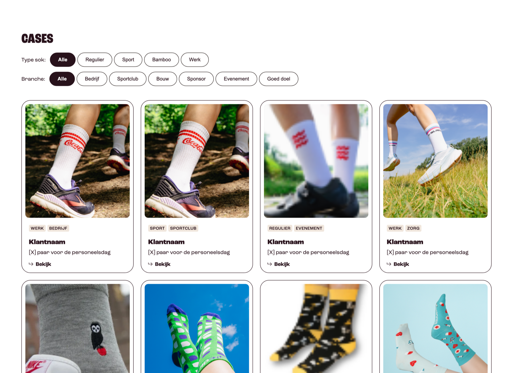
| Field | Notes |
|---|---|
| Titel | Leeg = "Cases". De filterchips komen automatisch uit de case-categorieën (Type sok en Branche). |
| Cases | Leeg = álle cases (nieuwste eerst). Er verschijnen er 8; "Meer laden" toont de rest. |
Foto's
Fotostrip klantontwerpen (cyaan)
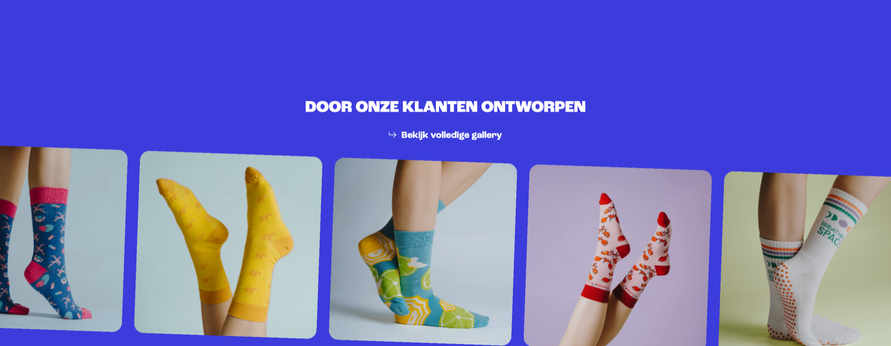
| Field | Notes |
|---|---|
| Titel | Leeg = "Door onze klanten ontworpen". |
| Link rechtsboven | Leeg = "Bekijk volledige gallery" naar reviews & cases. |
| Foto's | Leeg = standaardset. De strip schuift langzaam vanzelf door. |
Reviews
Reviews-slider
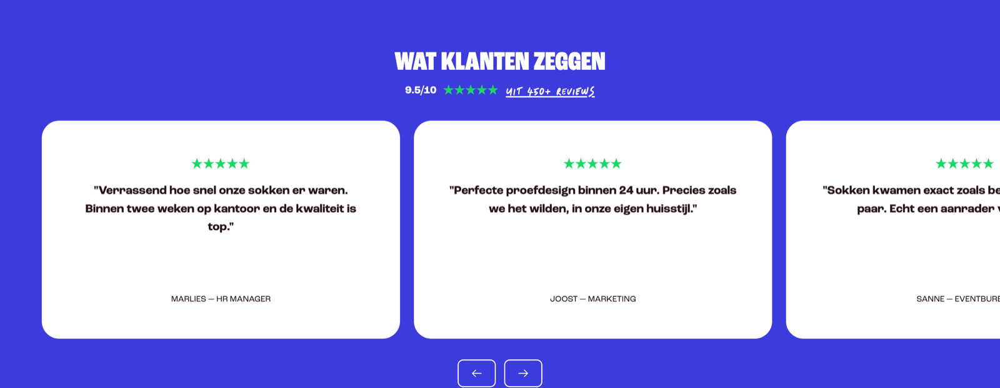
| Field | Notes |
|---|---|
| Titel | Leeg = "Wat klanten zeggen". De score ernaast komt uit Website-instellingen. |
| Reviews | Leeg = álle reviews (nieuwste eerst). Reviews beheer je onder "Reviews" in het menu links. |
Reviews-carrousel (volle breedte)
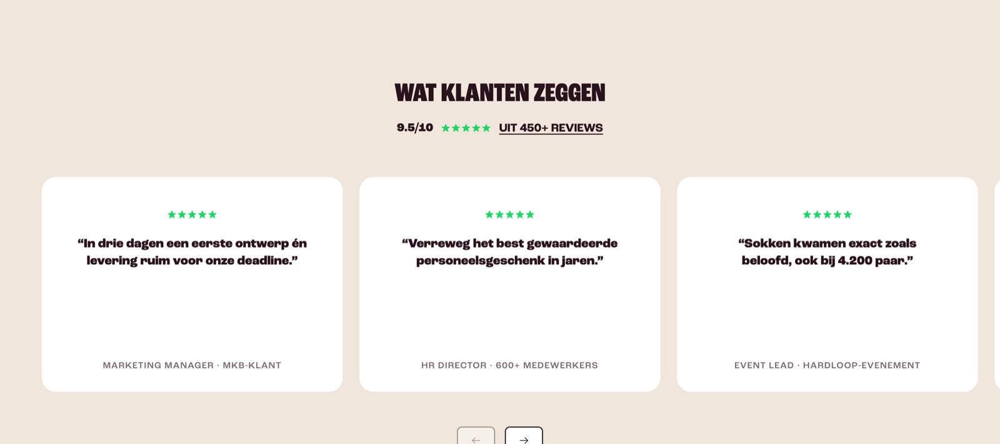
| Field | Notes |
|---|---|
| Titel | Leeg = "Wat klanten zeggen". Score/aantal komen uit Website-instellingen. |
| Reviews | Leeg = alle reviews. |
Duurzaamheid
Certificaten-tabs (coral)
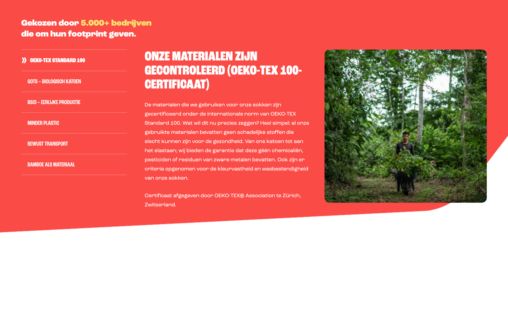
| Field | Notes |
|---|---|
| Introregel | Leeg = standaard. Geel deel tussen [ ], regelafbraak met <br>. |
| Tab-naam | — |
| Titel | — |
| Tekst | — |
| Certificaatregel (optioneel) | — |
| Foto | — |
Keurmerk-kaarten (3 logo's)
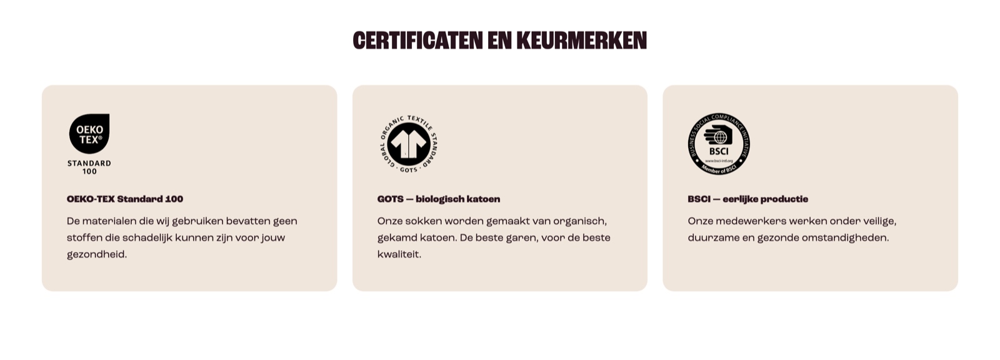
| Field | Notes |
|---|---|
| Titel | Leeg = "Certificaten en keurmerken". |
| Logo | — |
| Tekst | — |
Puntenblok met fotocollage
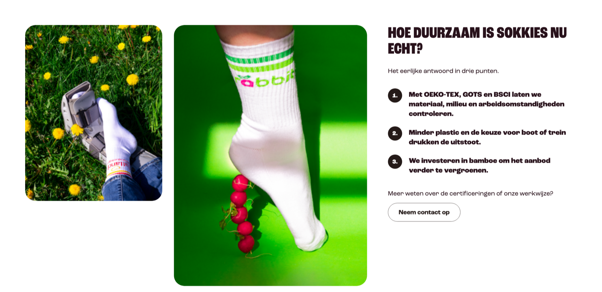
| Field | Notes |
|---|---|
| Titel | Leeg = standaardtitel. |
| Introregel | — |
| Foto (klein) | — |
| Foto (groot) | — |
| Tekst | — |
| Slotregel | Leeg = standaard. |
| Knop | Leeg = "Neem contact op" naar de contactpagina. |
Partners
Voordelen-kaarten (4 beige)
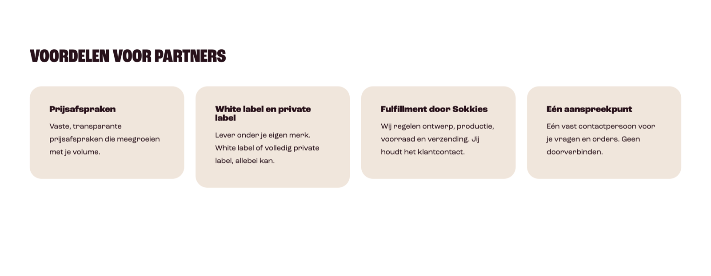
| Field | Notes |
|---|---|
| Titel | Leeg = "Voordelen voor partners". |
| Tekst | — |
Partnerlogo-grid met filter
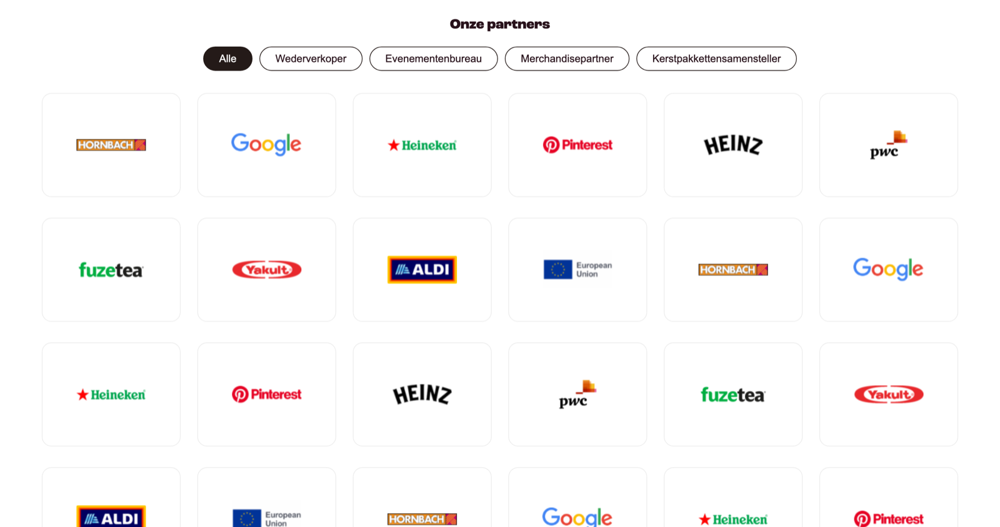
| Field | Notes |
|---|---|
| Titel | Leeg = "Onze partners". Filterchips komen automatisch uit de Partnercategorieën op de logo's. |
| Logo's | Leeg = álle logo's. |
One Tree Planted-blok (coral)
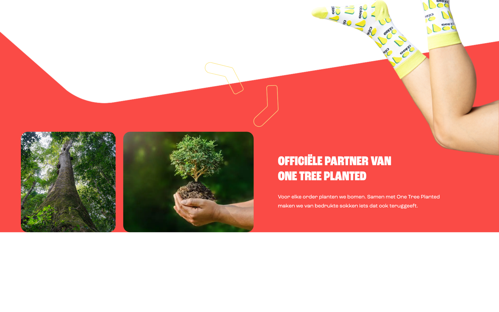
| Field | Notes |
|---|---|
| Titel | Leeg = standaard. Regelafbraak met <br>. |
| Tekst | — |
| Foto (klein) | — |
| Foto (groot) | — |
Brochure-download met formulier
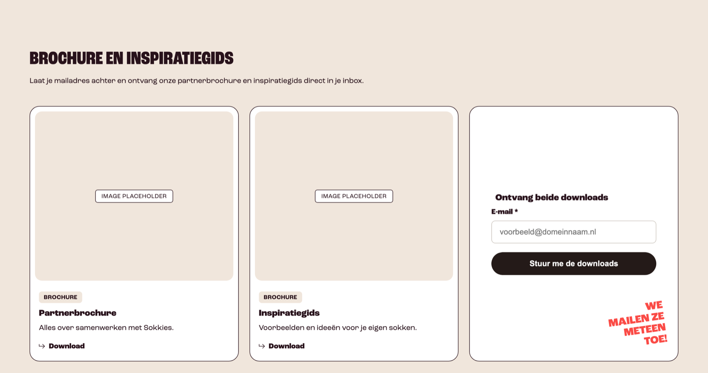
| Field | Notes |
|---|---|
| Titel | Leeg = "Brochure en inspiratiegids". |
| Introregel | — |
| Afbeelding | — |
| Label | — |
| Tekst | — |
| Bestand | — |
| Of een link | — |
| Formulier-kop | Leeg = "Ontvang beide downloads". Het formulier is nog een demo tot de formulierenfase. |
| Sticker-tekst | Leeg = standaard. |
Waarom Sokkies
Waarom-intro (6 fotokaarten)
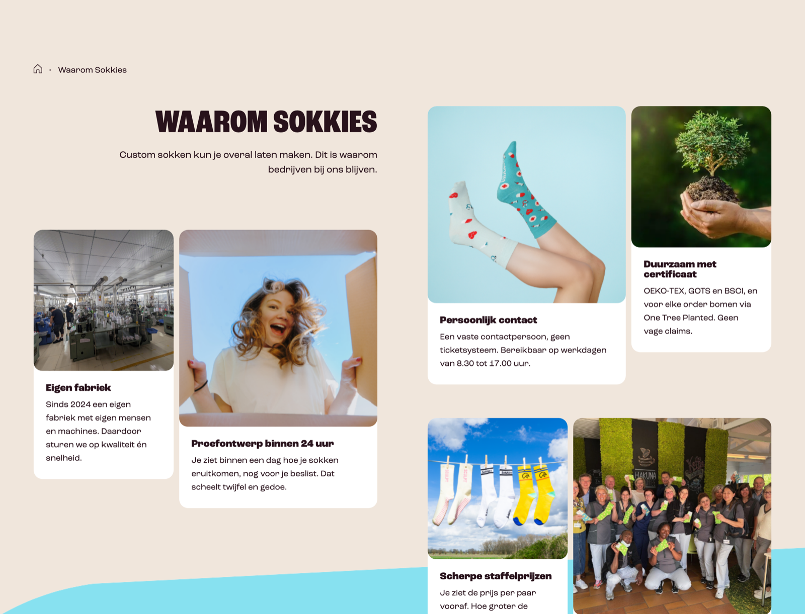
| Field | Notes |
|---|---|
| Titel | Leeg = "Waarom Sokkies". |
| Subtekst | — |
| Foto | — |
| Tekst | — |
Sokkies vs. de rest (tabel)
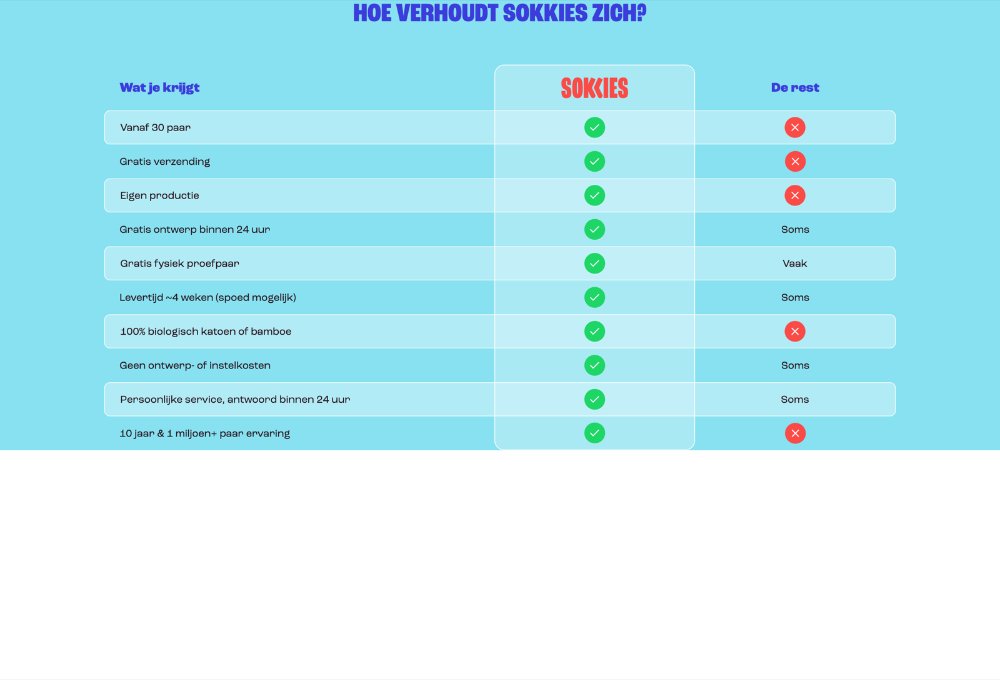
| Field | Notes |
|---|---|
| Titel | Leeg = "Hoe verhoudt Sokkies zich?". |
| Wat je krijgt | — |
| Sokkies | — |
| De rest | — |
Wat je krijgt (lijst + collage)
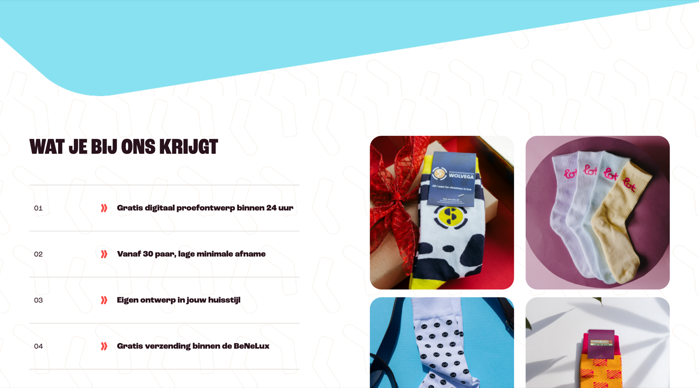
| Field | Notes |
|---|---|
| Titel | Leeg = "Wat je bij ons krijgt". |
| Tekst | — |
| Collage (4 foto's) | Kolom 1 = foto 1 en 3, kolom 2 = foto 2 en 4. Leeg = de standaardset. |
Over ons
Verhaalblok met fotocollage
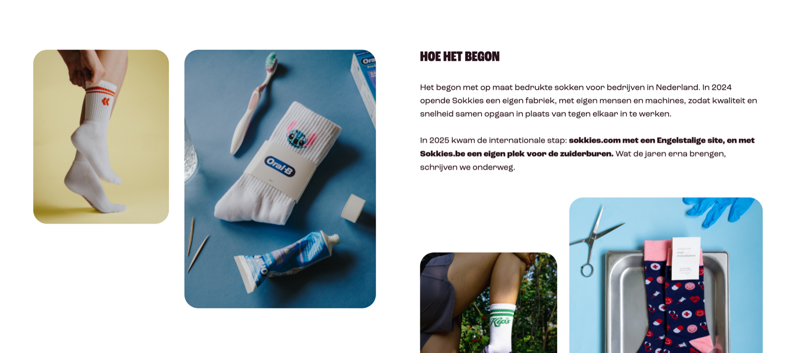
| Field | Notes |
|---|---|
| Titel | Leeg = "Hoe het begon". |
| Tekst | Leeg = de standaardtekst (twee alinea's). |
| Collage (4 foto's) | Dambord: klein/groot/klein/groot. Leeg = de standaardset. |
Tijdlijn-slider (jaren)
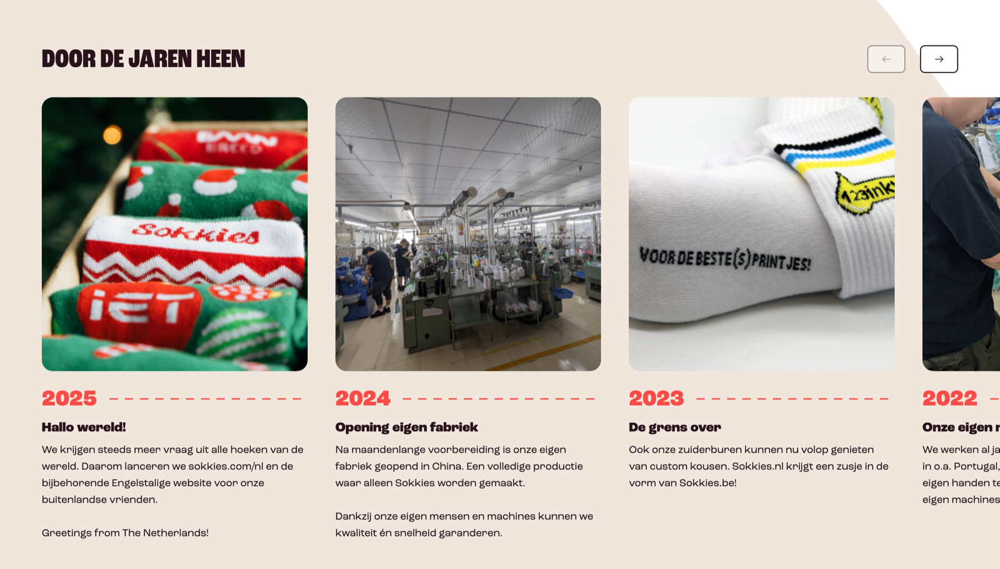
| Field | Notes |
|---|---|
| Titel | Leeg = "Door de jaren heen". |
| Foto | — |
| Jaar | — |
| Tekst | — |
Waarden (genummerde blokken)
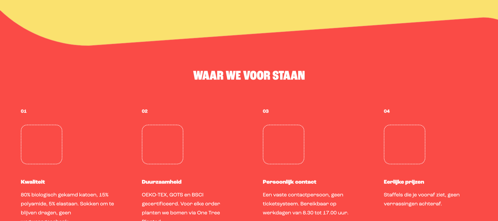
| Field | Notes |
|---|---|
| Titel | Leeg = "Waar we voor staan". |
| Icoon/foto | — |
| Tekst | — |
Duurzaamheidsblok met collage
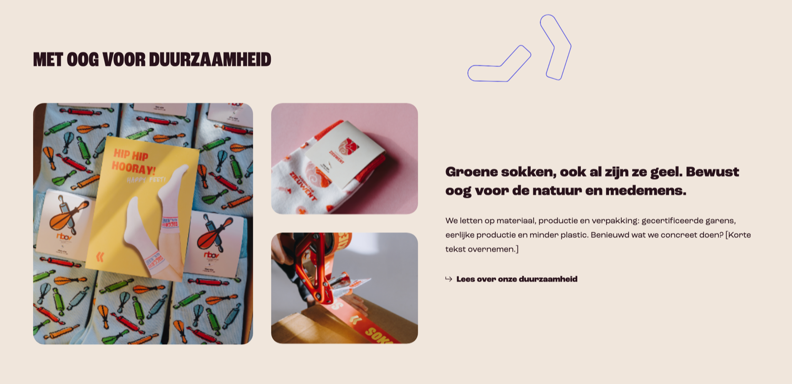
| Field | Notes |
|---|---|
| Titel | Leeg = "Met oog voor duurzaamheid". |
| Tussenkop | — |
| Tekst | — |
| Collage (3 foto's) | Foto 1 = groot, 2 en 3 = klein. Leeg = de standaardset. |
| Link | Leeg = "Lees over onze duurzaamheid" naar de duurzaamheidspagina. |
Funnel
Offerteformulier (3 stappen — demo)
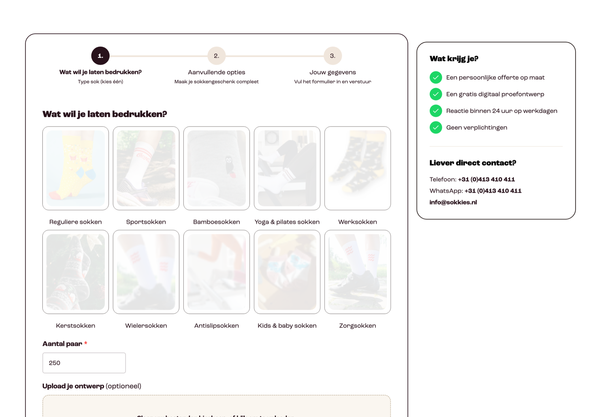
No fields — this section is fully automatic.
Sample-aanvraagformulier (demo)
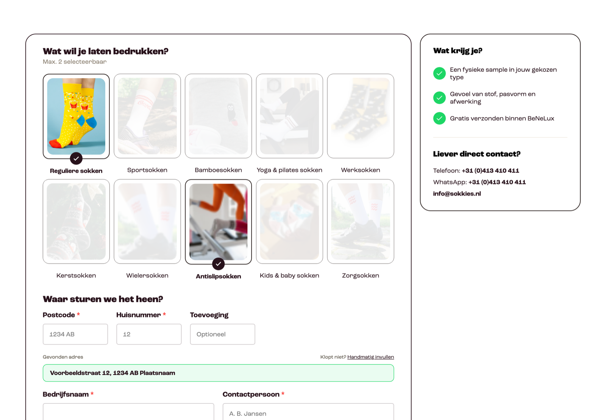
No fields — this section is fully automatic.
Bedankt-inhoud (bevestiging + volg ons)
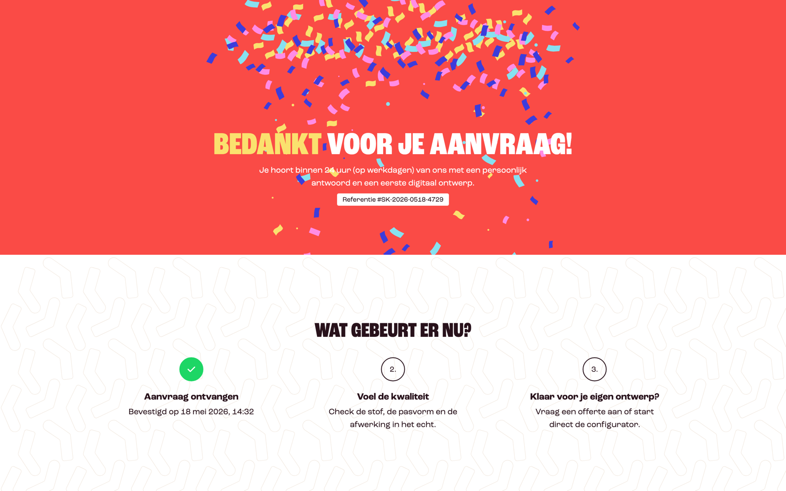
No fields — this section is fully automatic.